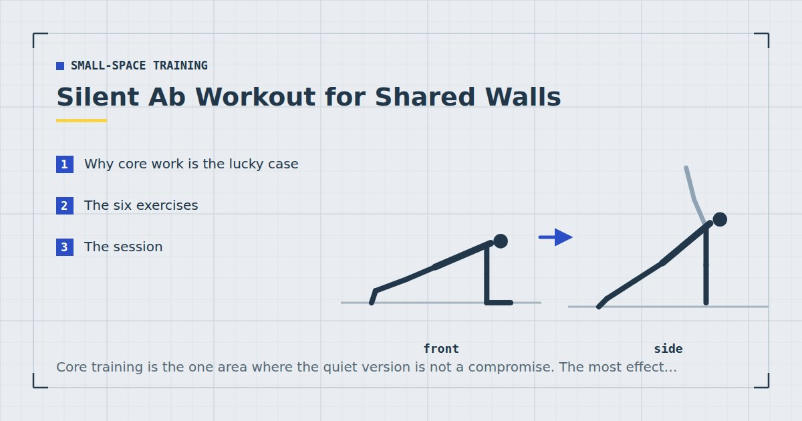

Small-Space Training
Silent Ab Workout for Shared Walls
Core training is the one area where the quiet version is not a compromise. The most effective trunk exercises happen to be the ones where nothing moves quickly.

Most quiet-workout advice involves accepting a slightly worse version of an exercise. Core training is the exception: the trunk's real job is resisting movement rather than producing it, so the most useful exercises are held positions and slow controlled movements — all of which happen to be silent.
The full case for this approach to core training is in core training without sit-ups. Here it is applied to the specific constraint of thin walls and sleeping housemates.
Why core work is the lucky case
Trunk muscles do four things: resist the back arching, resist rotation, resist sideways bending, and control hip flexion. Three of those four are trained by holding still against a load, and the fourth by moving slowly.
There is no equivalent of a jump squat in core training — nothing where speed or impact is the point. So the quiet version and the effective version are the same version, which is unusual and worth taking advantage of.
The six exercises
1. Dead bug
On your back, arms pointing at the ceiling, knees bent at ninety degrees above your hips. Slowly lower the opposite arm and leg while keeping your lower back pressed flat to the floor. Return and swap.
Completely silent, and the best anti-extension exercise available. If your lower back lifts, shorten the range — that shortened range is the correct one for you today.
2. Hollow hold
On your back, lower back pressed down, arms and legs extended and lifted a few inches off the floor. Hold. Bend the knees to make it easier.
Harder than it looks, entirely static, and silent.
3. Side plank
Forearm and feet, hips lifted, body in one line viewed from the front. Thirty to forty-five seconds each side. Drop to the knees to scale.
The anti-lateral-flexion exercise most routines omit.
4. Bird dog
On hands and knees, extend the opposite arm and leg and hold for two seconds. The goal is to keep the hips completely level — imagine balancing a glass of water on your lower back.
Deceptively demanding when done slowly, and the slow version is the correct one anyway.
5. Slow plank shoulder tap
From a push-up position with feet wide, lift one hand and touch the opposite shoulder. Set the hand down gently rather than dropping it — this is the only exercise here where you could make noise, and doing it slowly is both quieter and more effective.
6. Leg lowering
On your back, legs vertical, lower them slowly toward the floor while keeping the lower back flat. Stop where the back begins to lift, then raise them again. Never let the heels touch the floor.
The session
Ten minutes, at the end of a session or on its own. Rest forty-five seconds between sets.
- Dead bug — 3 × 8–10 each side
- Side plank — 3 × 30–45 seconds each side
- Bird dog — 3 × 8 each side, two-second holds
- Hollow hold — 3 × 20–40 seconds
- Leg lowering — 2 × 8–12
Two or three times a week. That covers all four trunk functions, takes ten minutes, and makes no sound whatsoever.
There is no jump squat equivalent in core training. The quiet version and the good version are the same version.
What still makes noise
Three things, none obvious until someone complains.
Setting hands and feet down. Shoulder taps and bird dogs involve placing a limb on the floor. Placed gently they are silent; dropped they are audible below. Slow is quieter and better.
Your mat. A thin mat on a hard floor transmits far more than a dense one, and this applies to hands and forearms as much as to feet — see exercise mats for noise reduction.
Breathing. Genuinely audible through a thin wall at midnight during a hard hollow hold. Nothing to be done about it beyond knowing it is there.
What is not a problem: everything else. No impact, no travelling, no equipment being set down. This is about as quiet as training gets — the broader approach is in quiet home workouts.
Progressing silently
Time is the obvious lever and the weakest one. Beyond about forty-five seconds on a hold, you are training tolerance for discomfort more than the trunk — the argument is set out in the plank progression chart.
Better options, all silent:
- Lengthen the lever. Straighter arms and legs in a dead bug and hollow hold. The single biggest jump available.
- Remove a contact point. Lift one foot during a plank.
- Slow everything down. A four-second leg lowering is considerably harder than a two-second one.
- Add a pause at the hardest point. Two seconds at full extension in a dead bug.
Since the load is light, proximity to failure is what produces the adaptation.1 A hold ended when you feel like stopping is not the same as one ended when your position starts to break.
On visible abs
Worth being straight about, because it is the unspoken goal behind most core training.
Whether abdominal muscles are visible is determined overwhelmingly by body fat, not by how much core work you do. You cannot reduce fat from a specific area by training the muscle underneath it. Core training makes those muscles stronger and somewhat larger, which changes how they look once body fat is low enough for them to show — and getting to that point is a dietary matter, framed honestly in the realistic weight-loss plan.
What this session will reliably do is build a trunk that braces properly under load, which improves your squats, push-ups and carrying, and which is what the muscles are actually for.
Where to go next
For the full four-category approach to trunk training, see core training without sit-ups. For a complete quiet session rather than just core work, see quiet bedroom workouts.
Frequently asked questions
What core exercises make no noise?
Dead bugs, hollow holds, side planks, bird dogs, slow plank shoulder taps and leg lowering are all effectively silent. Core training is unusual in that the most effective exercises are held positions and slow controlled movements, so the quiet version is not a compromise.
Can I do ab exercises at night without disturbing neighbours?
Yes, more easily than any other kind of training. The only sounds are limbs being set down, which slow controlled movement eliminates, and your own breathing during hard holds.
Are silent core exercises as effective as sit-ups?
More so, for most purposes. The trunk mostly works to resist movement rather than create it, and anti-extension, anti-rotation and anti-lateral-flexion exercises train that directly. Sit-ups train repeated spinal flexion, which is a narrower function.
How do I make core exercises harder without adding time?
Lengthen the lever by straightening the arms and legs, remove a point of contact by lifting a foot, slow the movement down, or add a two-second pause at the hardest point. Adding time beyond about forty-five seconds trains tolerance rather than strength.
Will core exercises give me visible abs?
Not directly. Visibility is determined overwhelmingly by body fat, and you cannot reduce fat from a specific area by training the muscle underneath it. Core work builds the muscle; diet determines whether it shows.
Sources and further reading
- Schoenfeld BJ, Grgic J, Ogborn D, Krieger JW. “Strength and Hypertrophy Adaptations Between Low- vs. High-Load Resistance Training: A Systematic Review and Meta-analysis.” Journal of Strength and Conditioning Research, 2017;31(12):3508–3523. PubMed.
- Vieira AF, Umpierre D, Teodoro JL, et al. “Effects of Resistance Training Performed to Failure or Not to Failure on Muscle Strength, Hypertrophy, and Power Output: A Systematic Review With Meta-Analysis.” Journal of Strength and Conditioning Research, 2021. PubMed.
- NHS. Strength and Flex exercise plan.
- MedlinePlus, U.S. National Library of Medicine. Exercise and Physical Fitness.
Comments
Comments are not enabled yet. Add a hosted comment embed (Disqus, Commento, Giscus) inside this container when you are ready.